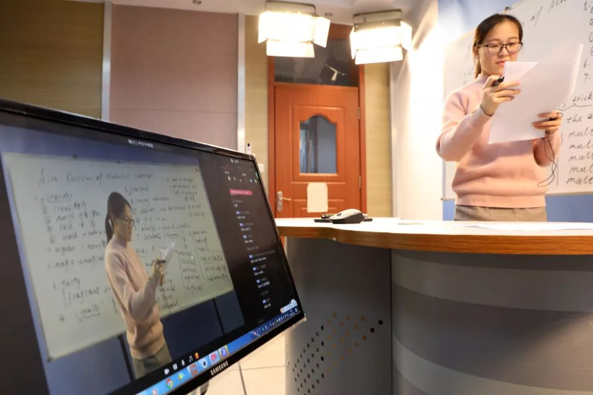

全民在线上课，一块屏幕改变了什么？
原文链接 备份链接 为什么这次在线教育又火了？ “到了2020年，老师和学生都不用去学校了，在家里就能上课”。这是2000年梦想杯作文大赛特等奖节选中的一句话，没想到在二十年后的今天却由于新冠肺炎疫情影响而变成了现实。 近年来在线教育被社 …

如何在老师与学生之间、学生之间相互不见面的情况下，
“保证在线学习与线下课堂教学质量实质等效”？
首先需要申明：我说这是个好问题，不是说我对于这个问题有个有把握的、确定准确的答案，而是说这个问题能够引发一系列关于高等教育教学的深刻思考。
2020年初，我国面临新冠肺炎带来的严峻挑战。为有效抵抗疫情，教育部做出了2020年春季学期延期开学的决定，并于2月5日印发《关于在疫情防控期间做好普通高等学校在线教学组织与管理工作的指导意见》。意见指出：“各高校应……积极开展线上授课和线上学习等在线教学活动，……保证在线学习与线下课堂教学质量实质等效。”
毫无疑问，延期开学是正确的决定。但是如何在老师与学生之间、学生之间相互不见面的情况下，“保证在线学习与线下课堂教学质量实质等效”？这是所有教育管理者和教师必须完成的一道必答题。
围绕着这道必答题，全国各高校都开展了各种探索，再叠加上中小学的网上授课和机关与公司的网络办公，一时之间网络拥塞，各种直播导致的翻车现场和段子层出不穷，老师们怨声载道……
直播？还是不直播？成为一个热点话题。“直播流派”和“录播流派”开始了“道统之争”，一时之间众说纷纭。

本文作者清华大学电机系教授于歆杰
作为一名普通高校教师，我认为：网络卡顿、工具不趁手、操作不熟练，都是外在的，都是“相”和“术”，这后面映射出的“法”和“道”则是：在当前这个情况下，我们应该做的是努力确保知识被顺畅地传递，还是努力确保知识被有效地掌握？如果说“道统之争”的话，这是在新冠肺炎疫情导致的在线教学场景下，教师中心主义和学生中心主义的大碰撞！
我首先需要把接下来讨论的边界说清楚：我们想要在相对长的时间内，用在线教学的方式，来实现与课堂教学实质等效的质量，尤其是需要确保基础课、核心课实质等效的质量。
第一，我不建议采用“事先录课、事先分发、让学生在上课时间观看、老师答疑”的方法。根据我们2013年做慕课的经验，每1小时慕课视频，大概需要10-15小时进行设计、录制、编辑和渲染。现在即使降低对效果的追求，每1小时课程视频，也需要至少3-5小时才能达到能拿得出手的最低要求。目前教师没有那么多时间。有人可能会反驳说，我对着个PPT用“录制幻灯片演示”的方式不也能娓娓道来好几十分钟吗？由此生成一个带音频的PPT或者一个MP4文件也不费劲啊。呵呵。你发自内心地认为你的学生会认真看吗？能“实质等效”吗？如果说事先录制，课堂播放，呵呵+1，那不就是直播吗？只不过直播的是录像而已。
第二，要用对用好慕课资源。截至2020年2月2日，教育部组织22个在线课程平台免费开放在线课程2.4万余门，覆盖了本科12个学科门类、专科高职18个专业大类。这些都是非常优质的在线学习资源！
但是无须讳言的是：
一方面，我国当前的慕课资源已经是世界第一，这是很了不起的成就。但如果一位老师的课刚好没有合适的慕课资源怎么办？还得有解决方案才行。
另一方面，尽管有的学生可以通过慕课达到良好的学习效果，但我不推荐用慕课学习大范围替代课堂教学，尤其对大容量班级更是如此。
慕课是基于非实时教学环境设计的产物，其目的就是让有学习意愿的人，无论何时何地，只要有网络就可以学习。慕课更强调学生学习的自主性。随时随地自主发生的在线学习往往需要教师提供碎片化的资源，这与课堂环境下的教学需求完全不同。慕课可以和课堂教学有机结合，如教师可以让学生在课堂外自己适合的时间去学习合适的慕课资源，进行预习和复习。但采用“学生在上课时间观看慕课视频+老师答疑”的方式，我认为是不合适的。这些基于碎片化学习需求设计的视频和资源，单位时间内信息量太大，在课堂中进行集中学习，很容易让学生无所适从，对大容量班级尤其如此。而教师的答疑，往往只能满足部分希望提出问题学生的需要，无法做到广泛顾及，无法确保效果“实质等效”。
把上面这话反过来说，如果某个学校的课程（尤其是大容量核心课程）用“课堂学习慕课+课堂或课后答疑”的方式，能够在相对比较长的时间内“实现与课堂教学实质等效的质量”，这才是老师和学校真正的悲哀，因为他/她就离被慕课炒掉不远了，而且这个学校也就离被基于慕课的网校炒掉不远了。
需要指出，我认为对于小容量班级而言，在当前场景下，充分利用慕课资源，是可以实现“实质等效”的效果的，甚至比在传统听课效果更好。课前，让学生在方便的时间学习教师安排好的慕课资源；课堂上，在教师进行精心教学设计的基础上，用某种方式开展充分的互动（各种网络会议和智慧教学工具都可以）。这是否理解为直播，其实不好说。但是对于大容量班级（比如我2月17日即将上的131人的电路原理），不可能实现“充分的互动”。
第三，我认为单纯的直播课也没法回答前面的必答题。无论用什么平台，无论用什么工具，即使是流畅的直播效果都是不行的。离开了教室环境，纯直播就像“百家讲坛”一样。你现在还看百家讲坛吗？从百家讲坛由盛而衰的现实，不难想象出在00后学生平时没事就刷抖音的时代，他们会在一天中连续观看很多老师的“百家讲坛”吗？能谈“实质等效”吗？
上述3种方案，各自的技术路线不同，但是它们中大多数“不行”、不能用于解决“实质等效”问题的核心，是因为它们都是教师中心主义的基本教育教学观，它们都只关心知识从教师嘴里被正确讲出来了，可能也可以被顺利送达学生耳朵边了，但是然后呢？没有然后。在老师和学生之间，学生和学生之间，没有然后是万万不行的。
直播不行，不直播也不行。那什么行呢？怎么能“在相对比较长的时间内，用在线教学的方式，来实现与课堂教学实质等效的质量”呢？
要想回答好这个问题，得搞清楚3个循序渐进的基本理念。
首先，不在教室不见面，降低了教师的吸引力，因此45分钟或者50分钟一节课时间太长了，教师用什么方法都无法达到原有的授课质量，要拆成15-30分钟一段来授课。不同类型的课程，颗粒度应该有所不同，但是都需要比原来的更碎。
其次，如果认可上述观点，紧接着的思路自然就是，在每个相对较短的时间段里，必须采用比校园课堂授课更丰富的交互式手段才能吸引学生注意力。这些手段，有的就是用来“刷存在”的；但是更多的，是用来采集学生学习行为和学习效果数据的。只有实时准确地获得了这样的数据，教师才能根据学生的实际情况进行及时调整，而不是单枪匹马绝尘而去。
再有，假设上面的措施成功了，由于总的授课时间是不变的，势必要适度减少课堂教学内容。因此需要教师舍得“割肉”，一方面进行更精细的教学设计，梳理出课堂内/外的教学内容，互为补充；另一方面也需要采取有效措施来确保学生能在课外发生有效学习行为，取得可衡量的学习成效。需要强调一下，前面一句中的“确保”、“有效”和“可衡量”不是随便写的。你布置学生课外去看教材的第3章第4节，能“确保”、“有效”和“可衡量”吗？
有了这3个基本理念，我的观点就呼之欲出了：无论是“采集学生学习行为和学习效果数据”，还是“确保学生能在课外发生有效学习行为”，都需要掌握学习成效，都需要数据支撑，都需要频繁交互，都需要师生异地实时在线（在下面文字中，我将其称之为直播。请读者注意，这与前面的直播含义不同）。
因此我认为，要想回答好前面这道必答题，在相对比较长的时间内，用在线教学的方式，来实现与课堂教学实质等效的质量，就必须遵循“成效为道，数据为器；交互为体，直播为用”的基本原则。“实质等效”要求我们必须密切关注学生的学习成效，这是内在的“道”；没有数据这个外在的“器”，就不知道学生的学习成效如何，在在线教学的场景下，就一定会丢学生；交互这个内在的“体”是重要的，但是交互的目的不是为了聊天，是为了采集数据；直播这个外在的“用”是表象的，但只有在直播的场景下，才能做到实时交互，才能采集数据，才能进行反馈，才能确保成效，才是以学生为中心，才能“实质等效”！
可以看出，这种模式，是典型的学生中心主义的基本教育教学观，把注意力放到学生掌握程度上。
在课堂教学场景下，学生需要在固定的时间和固定的地点出现，教师中心主义和学生中心主义的差别可能没有那么大，但是在实时、互动、异地、分散的在线教学场景下，二者之间的差别被剧烈地放大了，大到不可忽略。
至于采用怎样的技术方案，用怎样的工具，在这里我并不“带货”，这类轻量级智慧教学工具其实有很多。无论是哪个，只要能实时、互动、异地、分散地采集学习行为和学习效果数据，就好使！
当然，教师也应及时调整，对课程某些方面的要求适度降低，某些方面的要求适度提高。因为网络、工具等原因，没有任何一个方案能够确保你说：“同学们听到了吗”，1秒内应者云集说：“听到了”。教师应该在课堂反馈的实时性上适度降低要求。但与此相反，应该在学习行为和学习效果的收集上适度提高要求，比如要让学生每10分钟回答一个问题，并根据数据反馈调整自己的直播讲课方式。
那网络拥塞怎么办？工具崩溃怎么办？
当前紧急情况下，没有万全之策，要有预案。要有Plan A和Plan B甚至Plan C。经过初步测试和总结，我个人的预案是：Plan A，雨课堂录屏直播+课外适度学习慕课；如果A不行，Plan B，腾讯会议直播+课外适度学习慕课；如果B也不行，Plan C，微信群音频+课外适度学习慕课。如果希望走嵌套的技术路线，我觉得用腾讯会议做直播，用雨课堂（不直播）推题，采集学生反馈，进而调整教学。这样做效果会远远好于在课堂看慕课（或事先录的视频）+答疑。
也许还有不少教师会担心，有了n个Plan，依然有可能出现“翻车现场”，导致手忙脚乱怎么办。这种情况确有可能会发生。我想这是很多不喜欢直播的教师最大的担心。在这个问题上，1989年哈佛大学的Elmore教授说了一句非常振聋发聩的话“How we teach is what we teach.” 从学生端来看，当前老师为了能够如期开始上课，想尽种种办法，由于临时意外，导致现场翻车，他会在网络远程哈哈大笑，然后扭头睡觉吗？不会的，他会知道，这个老师在尊崇他的职业操守，在为实现“实质等效”尽最大的努力，虽然他显得笨手笨脚，但是这个老师是值得敬佩的。这种精气神，会感动学生，会带动学生认真学习。而当下，让学生不焦虑，踏踏实实认真学习，是最为重要的！清华一直强调“价值塑造、能力培养和知识传授”三位一体的人才培养理念。对于某门课程的老师来说，在整个国家正在遭受磨难之际，时时刻刻想着要开展高水平教学工作，不能辜负学生，这是最好的价值塑造！这是最好的立德树人！这是最好的课程思政！从这个意义上来说，只要你努力去设计，去实现，去沟通，去交互，无论做成什么样，都“实质等效”，甚至在价值塑造方面的效果会好于传统的课堂讲授。
可能看到这里，你会觉得被我云里雾里地搞晕了，到底该干什么呢？我想如果只记一句话的话，那就是：当前最重要的，不是考虑该如何顺畅地传递知识，而是应该努力了解知识被掌握的程度，进而进行调整。至于如何知道掌握程度，各种智慧教学工具、网络会议、微信群发言、Learning Management System的讨论区，都可能会适用于不同类型和不同容量的课程，我们在课堂里面需要这些师生异地实时在线的直播。当然你可能会问：不传递如何掌握？结合不同类型、不同容量的课程，采用录屏直播、网络会议、分散异地观看现有视频（推荐精品开放课程资源或精品在线开放课程资源）都可以。我需要再次指出，传递知识的重要性低于了解知识被掌握的程度。
前面由直播还是不直播说起，引出了在线教学场景下，教师中心主义和学生中心主义的大碰撞。事实上，这场大碰撞有可能引发全新的教学场景。
2001年MIT提出的OpenCourseWare是伟大的，它是高等教育“开放”教育资源的肇始者，使得全世界高等教育者能够知道MIT是怎样开展教学活动的，带动了整个世界高等教育开放课程的浪潮，导致了高等教育在课程教学方面开始了实质性的竞争。2012年Massive OpenOnline Course也是伟大的，它是促进教育公平的重要工具，使得几十万社会学习者能够以“在线”的方式学习，为实现终身学习的宏伟目标打开了一片新天地。2020年为应对新冠肺炎引发的大规模在线授课也会是伟大的，它使得几百万甚至几千万校园学习者能够以在线的方式产生“教与学”和“学与学”之间的实时高质量互动，无论是称其为Massive Online Course Teaching还是Massive Online Course Coaching，它的价值是在教师引导下以学生为中心实时开展大规模远程教与学互动。
我认为OCW会影响教师教学法，进而间接影响课堂教学。我认为MOOC会促使课堂教学向着混合式的方向转变，进而直接影响课堂教学。我认为MOCT或者MOCC会深刻地改变课堂教学，因为它从根本上使得一个教师能够以实时（或者准实时）的方式，远程地让成千上万乃至几万人实现高质量的学习！“课堂”一词的含义可能会被改写。我一般不用革命这个词，但这可能真是一场革命！
让我们回到当前教师面临的必答题：如何在老师与学生之间、学生相互之间不见面的情况下，“保证在线学习与线下课堂教学质量实质等效”。我想首先需要教师和管理者牢固树立以学习成效为中心的教育教学理念，遵循“成效为道，数据为器；交互为体，直播为用”的基本原则；其次需要充分利用移动互联时代带来的红利，选择优秀的智慧教学资源和工具，精心设计教学内容和交互式环节。只有这样，才能让学生身在家而心在学，才能做到“实质等效”。
疫情尚未结束，让我们共同努力！
值班编辑：罗晓兰
推荐阅读
▼



原文链接 备份链接 为什么这次在线教育又火了？ “到了2020年，老师和学生都不用去学校了，在家里就能上课”。这是2000年梦想杯作文大赛特等奖节选中的一句话，没想到在二十年后的今天却由于新冠肺炎疫情影响而变成了现实。 近年来在线教育被社 …
原文链接 备份链接 *************▲ *************2020年春季学期，王鲁峰在老家的屋顶开启了直播，为62名本科生授课。受访者供图 全文共4442字，阅读大约需要7分钟。 肖寒还在网上完成了本学期的第一节体育 …
原文链接 备份链接 明明开学都推迟了 家长反而更忙乱了疫情之下，不少当爹妈的宅在家，陪娃过着漫长的寒假。 停课不停学，老师当主播，在家上网课，却让不少家长直呼撑不住。一边要在家办公，一边还要参与学校布置的任务，光是每天直播课的花式打卡， …
原文链接 备份链接 “有一次我突击去检查孩子的网课情况，发现她网课是在播放，但是电脑桌面当前窗口显示的却是她的QQ群，原来一群同学正聊得欢。” 记者|王晓珊 编辑| 盛倩玉 小豆 实习生| 甘笠男 刘苗苗 龚纾绮 “咋出来的不是云课堂？难 …
原文链接 备份链接 全文共3557字，阅读大约需要7分钟。 “停课不停学”不等于上网课，上网课也不是简单的课堂转移。广义上的学习，是让孩子在生活痕迹中思考本质，借助互联网和信息化教学资源建立属于自己的精神天空。 教学形式的演进无法代表教育 …